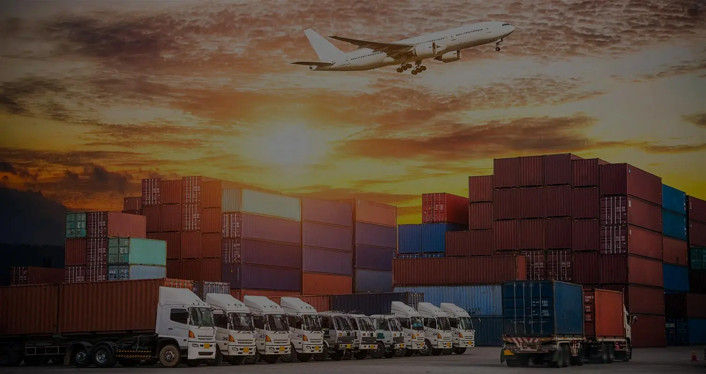

Today the world is a truly global place, where we use petrol from Saudi Arabia, fruits from Philippines, cars from South Korea, mobile phones from China, clothes from Bangladesh, tools from Germany and more. In the midst of all this globalization, the management of all this cargo plays a key role in ensuring that the right product reaches the right customer. Shipping is a multi – billion dollar enterprise which is kept in check by government systems to manage foreign trade deficits and to prevent the entry of illegal contraband. This project aims to build a portal that will make the process simple for the consignor, the consignee and all the government officials in between.
The portal can be used by different shippers, importers, exporters, suppliers, etc. The process begins with a client placing an order. The stocks on the client end can be tracked by the shipper and automatic orders can be placed by the system when stocks drop below a particular value. When a new consignment is created it is logged in the system and all the specific details such as value of goods, dimensions, quantity, category of goods, etc will be entered as well. Funds can be made available in an escrow account to make the payments of taxes, shipping costs, etc. When the order is dispatched the details about the vessel will be made available and the system will automatically update tracking information. Whenever the ship reaches a customs check the system will notify the officials of the goods on board and a tax receipt can be generated, following which the system will automatically disburse funds via online banking for the tax. The system will keep track of all the declarations, tax receipts, movement papers and accounting information as the journey progresses.
When the shipment is nearing its destination, the system will notify the consignee to arrange transportation. The tax payments and port release formalities can be handled when the ship is still off shore so as to reduce the time period spent by the shipment at the port. Depending on the nature of the shipment officials may or may not require to personally inspect it. The system works on the assumption that the customs officials trust the integrity of the consignor as long as there is no cause for suspicion, surprise raids may be conducted to scare people from smuggling shipments in.